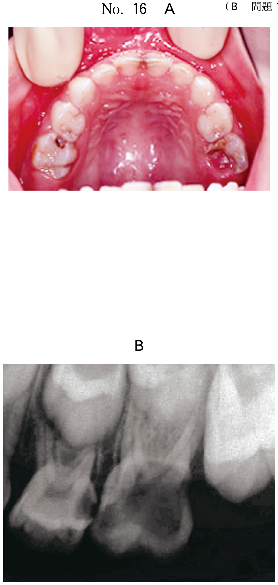

顎骨嚢胞の治療法は従来よりPartsch I法とPartsch II法が行われている。
| 術式 | 別名 | 方法 | 適応 |
|---|---|---|---|
| Partsch I法 | 開窓法（副腔形成法） | 嚢胞壁の一部を保存し、切開した口腔粘膜と縫合して開窓とする | 大きな嚢胞、重要組織に近接する嚢胞 |
| Partsch II法 | 摘出法（嚢胞摘出術） | 嚢胞壁を全摘出し、切開した口腔粘膜を完全に縫合閉鎖する | 比較的小さな嚢胞（一般的な第一選択） |
粘液嚢胞（mucocele）は下唇に好発する軟組織嚢胞であり、小唾液腺の導管損傷による唾液の貯留・溢出により生じる。10〜30歳代に多い。治療の基本は摘出術である。
※病理学的には、導管内に唾液が貯溜する貯溜型（retention type）と、導管外に溢出する溢出型（extravasation type）に分類される。大多数は溢出型。
| 嚢胞の大きさ | 切開線 |
|---|---|
| 小さな嚢胞 | 被覆粘膜ごと楕円形（紡錘形）に切開し、嚢胞と一塊に摘出 |
| 大きな嚢胞 | 嚢胞基部に沿って半月状の切開を置き、基部から剥離して摘出 |
舌下腺から発生する粘液嚢胞で、口腔底に好発する。
14歳の男子。下唇部の腫瘤を主訴として来院した。潰れて消退しても再発を繰り返すという。切除術を行うこととした。腫瘤部の切開線（別冊No.21）の写真を別に示す。適切な切開線はどれか。1つ選べ。

【解説】下唇部の腫瘤で「潰れて消退しても再発を繰り返す」という臨床経過から粘液嚢胞と診断できる。粘液嚢胞の摘出では、被覆粘膜を嚢胞と一塊にして全摘出するために、嚢胞を含む楕円形（紡錘形）の切開線を設定する。ウが嚢胞の長軸に沿った楕円形の切開線を示しており正解である。原因となっている小唾液腺も同時に除去し、再発を防止する。